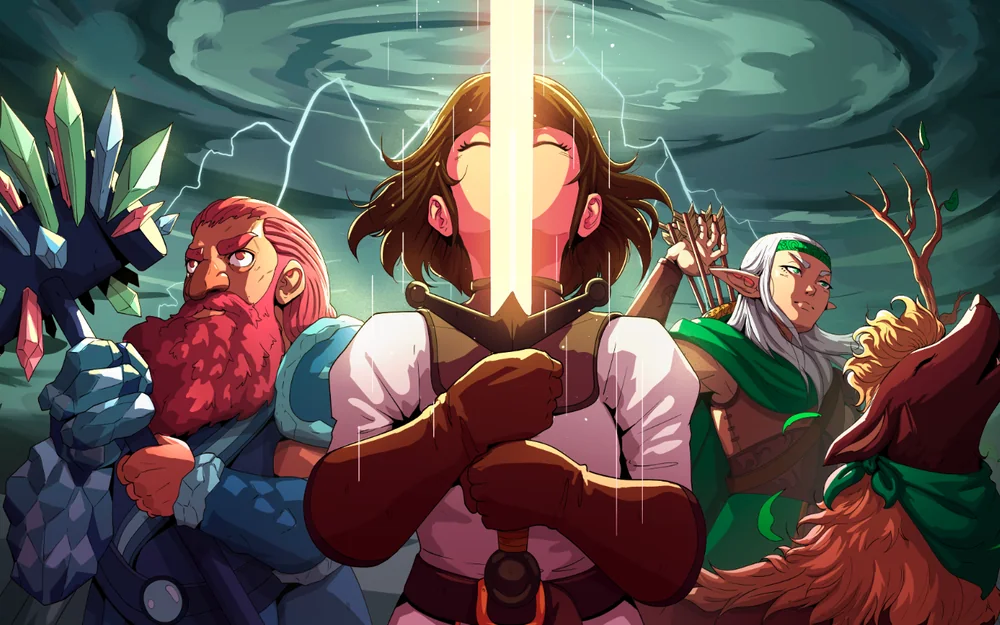
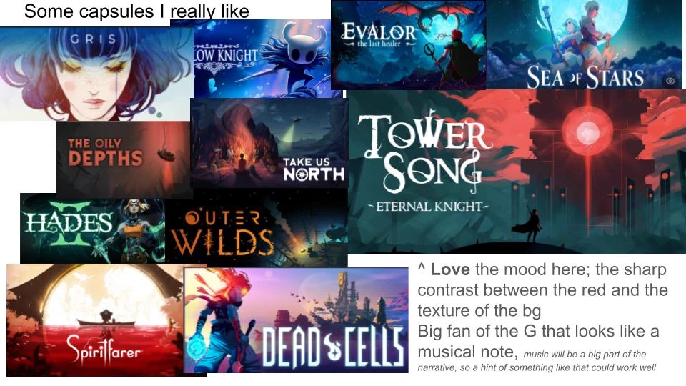
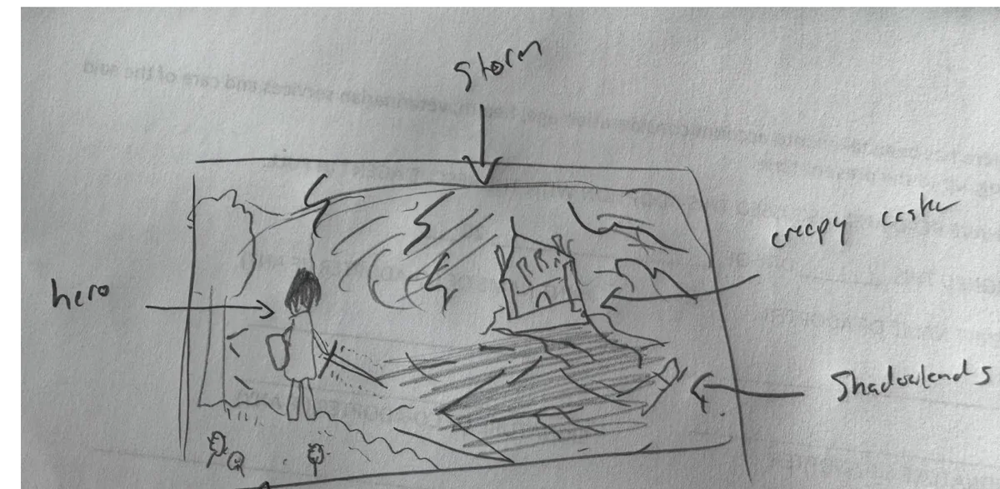
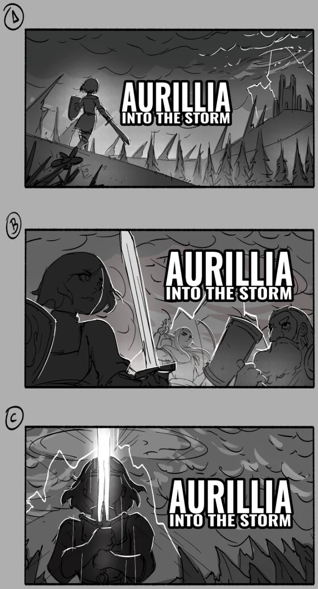
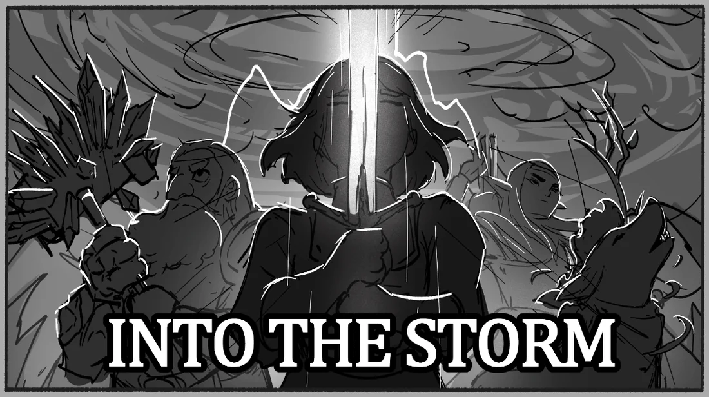
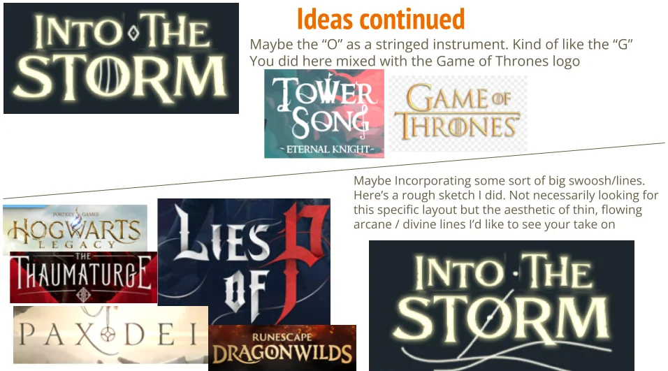
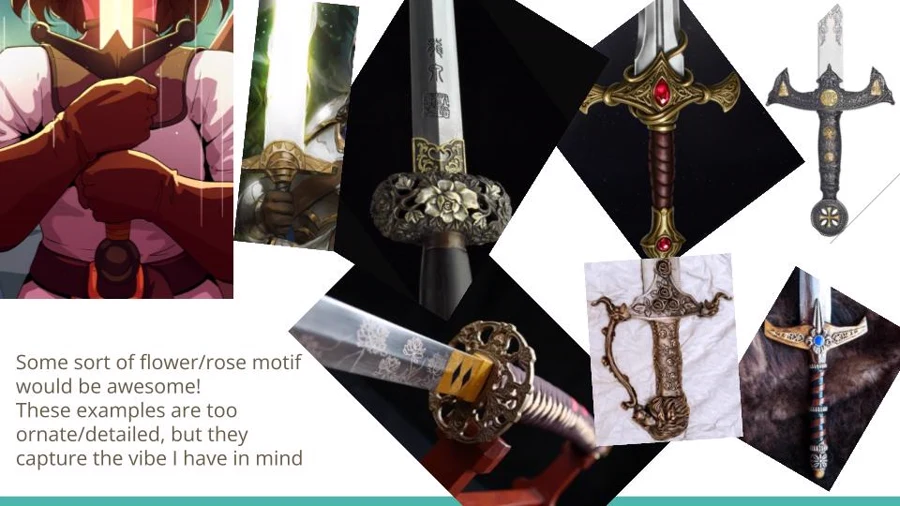
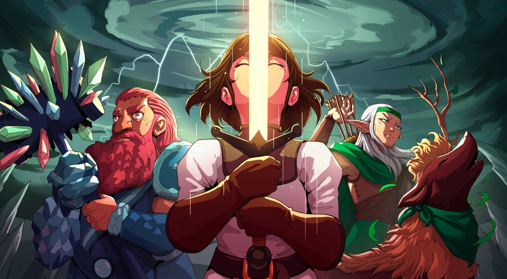
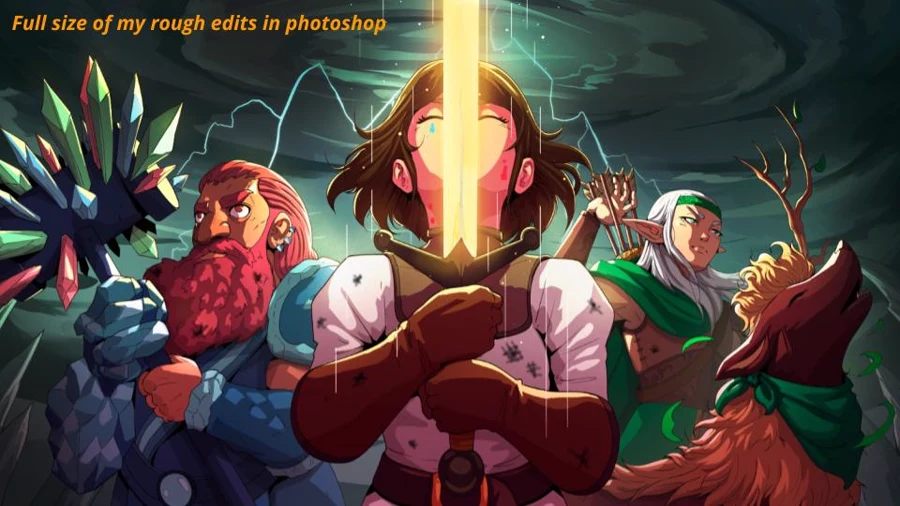
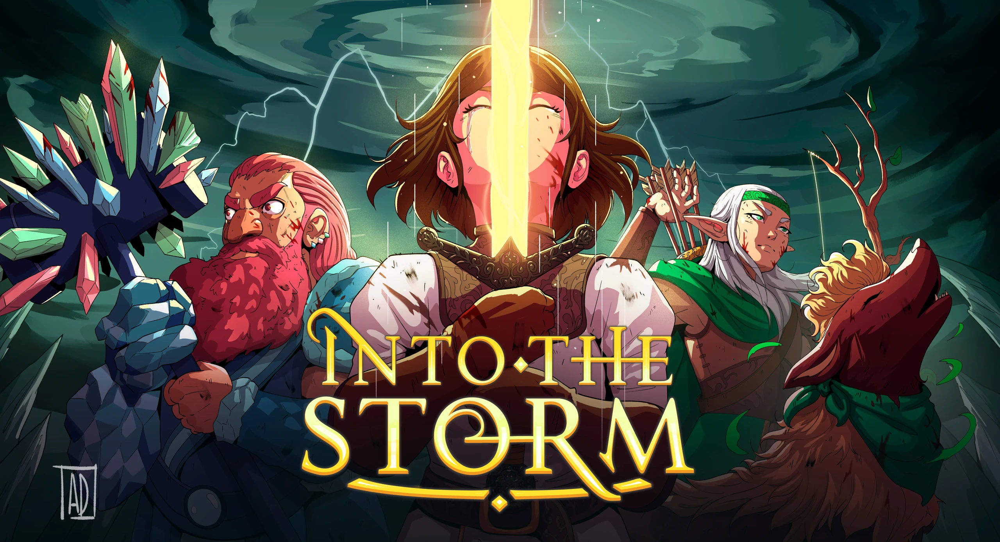

A point of view before a picture
I began with a feeling rather than a finished composition: a small party facing something much larger than themselves, framed by a storm that felt both dangerous and inviting.
The reference board established the contrast, color, and sense of scale; my rough sketch gave that atmosphere its first shape.


Finding the composition
Alejandro explored three different ways into the image. Rather than choosing one unchanged, I pulled together the strongest ideas: composition C's central sword and heroic focal point, with the wider party presence of composition B.
That decision turned the capsule from a portrait of one character into a statement about the whole adventure.


Directing through references
The feedback became more specific as the identity took shape. For the logo, I referenced thin arcane linework and musical forms rather than prescribing a finished mark. For the sword, I used floral and rose motifs to communicate the kind of ornamentation the world needed.
References gave us a shared vocabulary while leaving room for interpretation.


Notes you can see
I used rough visual edits when words alone would have been slower or less precise. The goal was not to redraw Alejandro's work, but to clarify hierarchy, character details, and where the image needed another pass.
Each round moved from broad composition toward smaller decisions without losing the energy of the original concept.
The finished identity
The finished image gave Into the Storm an identity larger than the prototype it began as: a bright party gathered beneath an impossible storm, with the sword and logo sharing the same visual language. What started as a learning project finally looked like a game with a world of its own.

Feedback without leaving the game
The most useful playtest feedback happens at the exact moment a player notices something feels wrong. Asking them to stop, take a screenshot, switch apps, and reconstruct the moment later loses both context and reports. I built feedback directly into Into the Storm so bugs, confusion, ideas, and general notes could be captured without leaving the game.
Players can open the form from an always-available button or with F12, choose a category, and describe what happened. Each report carries a lightweight tester identity, giving the team a consistent playtest reference without asking players to create an account.
One report, three outputs
Submitting hides the form and captures the current screen automatically. That single report then serves three jobs: Discord makes it visible to the team quickly, Supabase preserves the structured record for analysis, and a local Markdown log plus PNG protects the report if the network is unavailable.
In-game form
Category, note, and tester identity are collected where the issue occurs.
Context captured
The UI disappears and the current play state is captured automatically.
- DiscordFast human triage with the attached screenshot.
- SupabaseStructured feedback, linked to gameplay analytics.
- Local fallbackMarkdown and PNG saved immediately on the device.
Fast enough to act on
Discord is not a separate feedback form. It is the fast human-review channel behind the in-game report. The note, category, tester, timestamp, and screenshot arrive together, so a bug or point of confusion can be understood before someone has to recreate it.
Discord hosts the uploaded image and returns its URL; Supabase stores that URL alongside the report metadata rather than duplicating the image binary.
When color-coded was not clear enough
One recurring point of confusion was card ownership. Each character's cards already used different colors, but playtesters still struggled to tell whose card they were holding at a glance. The color existed, but it was not doing enough work in the moment players needed it.
I reworked the presentation around a stronger ownership signal: character-colored treatment, glow, and a clear highlight on the associated hero. That specific feedback disappeared in subsequent sessions. It was a small visual change with an outsized effect—and a reminder that creators become accustomed to cues players have never learned.
Qualitative reports, behavioral context
Feedback becomes more useful when it can be compared with what happened around it. Each report is associated with a tester, session, run, app version, platform, build type, act, and floor. That allows a comment about an encounter, card, or economy decision to be read alongside behavioral analytics rather than as an isolated note.
The same analytics service records sessions, runs, combat outcomes, draft decisions, deck changes, and shop events through Supabase's REST interface. The game sends structured JSON records; it does not connect directly to PostgreSQL.
Development continues in closed Alpha.